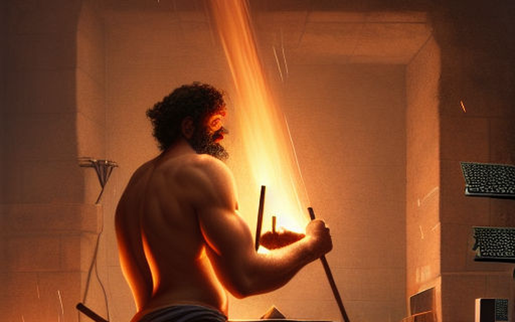
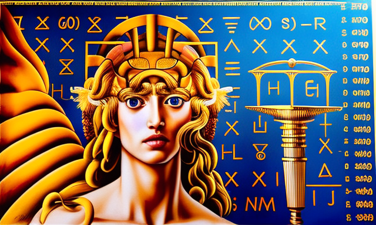

Ο Ήφαιστος και ο λάμδα λογισμός
Αρχική Σελίδα
Πίνακας Περιεχομένων
Η γέννηση του υπερυπολογιστή

Μια φορά κι έναν καιρό, στο βασίλειο των θεών, ζούσε ο Ήφαιστος, ο θεϊκός σιδηρουργός και ο προστάτης των τεχνιτών. Ήταν γνωστός για την απαράμιλλη δεξιοτεχνία του και τη σφυρηλάτηση των πιο θαυμάσιων και ισχυρών όπλων και εργαλείων.
Μια μέρα, ο θεός αποφάσισε να δημιουργήσει κάτι πραγματικά εξαιρετικό και πρωτοποριακό. Με τη βοήθεια των βοηθών του και τη φυσούνα εκπνοής φωτιάς, άναψε το φλεγόμενο χυτήριο και ξεκίνησε να κατασκευάσει έναν υπολογιστή.
Ο Ήφαιστος εργάζοταν ακούραστα, μέρα και νύχτα, με το σφυρί στο χέρι, διαμορφώνοντας και σφυρηλατώντας το μέταλλο σε περίπλοκα κυκλώματα και περίπλοκα μονοπάτια. Έδινε μεγάλη προσοχή στις λεπτομέρειες, γιατί ήξερε ότι η επιτυχία της δημιουργίας του βασιζόταν στην ακριβή διάταξη κάθε λογικής πύλης και κάθε μεταβλητής κατάστασης.
Με κάθε χτύπημα του σφυριού του, έδινε ζωή στον υπολογιστή, εμποτίζοντας τον με ευφυΐα και τη δύναμη να επεξεργάζεται πληροφορίες. Εργάστηκε με την ίδια αφοσίωση και εστίαση που έδινε σε όλες τις δημιουργίες του, προσέχοντας μέχρι και την μικρότερη λεπτομέρεια.
Και έτσι, γεννήθηκε ο πρώτος υπολογιστής, ένα θαύμα θεϊκής μηχανικής που μπορούσε να επεξεργάζεται, να αποθηκεύει τεράστιες ποσότητες δεδομένων και να εκτελεί σύνθετους υπολογισμούς με αστραπιαίες ταχύτητες. Οι θεοί θαύμασαν τις ικανότητές του και ο Ήφαιστος απολάμβανε τη δόξα της δημιουργίας του.
Όσο περνούσε ο καιρός, ο υπολογιστής γινόταν πιο προηγμένος, με τα κυκλώματα να αντικαθιστούν τις κάρτες και το λογισμικό να αντί των χειροκίνητων εντολών. Ο Ήφαιστος εργάστηκε ακούραστα, τελειοποιώντας και εξευγενίζοντας τη δημιουργία του, μέχρι που έγινε ακρογωνιαίος λίθος του σύγχρονου κόσμου, απόδειξη της δύναμης του θεϊκού σιδηρουργού.
Ο υπολογιστής του Ηφαίστου μνημονεύεται ως ένα από τα μεγαλύτερα θαύματα του αρχαίου κόσμου, ένα σύμβολο της δύναμης των θεών και ένας φόρος τιμής στην ικανότητα και την αφοσίωση του αρχαιου τεχνίτη σιδερά.
Η καταστροφή του υπολογιστή

Όμως, όπως συμβαίνει με όλες τις μεγάλες ιστορίες, ήρθε μια μέρα που χτύπησε η καταστροφή. Ένας από τους βοηθούς του Ηφαίστου, ένας απλός θνητός τεχνίτης, επιφορτίστηκε με τη συγκόλληση της μητρικής πλακέτας, ενός ευαίσθητου και κρίσιμου στοιχείου του υπολογιστή.
Με τη βιασύνη και την άγνοιά του, ο τεχνίτης χτύπησε αδέξια με το σφυρί και συνέδεσε δύο κυκλώματα μεταξύ τους σε λάθος λογικές πύλες, διαταράσσοντας την προσεκτικά σχεδιασμένη ροή πληροφοριών. Ο υπολογιστής άρχισε να δυσλειτουργεί, οι διαδικασίες του βάλτωσαν και η απόδοσή του επιβραδύνθηκε.
Ο Ήφαιστος ήταν έκπληκτος με τη ζημιά που είχε γίνει, γιατί ήξερε ότι αυτό το λάθος δεν μπορούσε να αναιρεθεί. Κάλεσε τον τεχνίτη και ζήτησε εξηγήσεις, αλλά ο απλός θνητός αδυνατούσε να προσφέρει δικαιολογία για την απροσεξία του.
Με βαριά καρδιά, ο Ήφαιστος ξεκίνησε να επισκευάσει τον υπολογιστή, αποφασισμένος να τον επαναφέρει στην παλιά του αίγλη. Εργάστηκε ακούραστα, εντοπίζοντας τις στραβωμένες διαδρομές και συνδέοντας προσεκτικά τα κυκλώματα, διασφαλίζοντας ότι κάθε λογική πύλη ήταν σωστά ευθυγραμμισμένη.
Μετά ατελείωτων μερών και νυχτών, ο Ήφαιστος πέτυχε το έργο του. Ο υπολογιστής ήταν για άλλη μια φορά ένα θαύμα θεϊκής μηχανικής, επεξεργασίας και αποθήκευσης τεράστιων ποσοτήτων δεδομένων με αστραπιαία ταχύτητα.
Η ιστορία του Ηφαίστου και του υπολογιστή συμβολίζει μια υπενθύμιση της δύναμης των θεών, της σημασίας της εστίασης και της ακρίβειας και των κινδύνων της βιασύνης και της απροσεξίας. Γιατί στο βασίλειο των θεών, όπου η φωτιά και το σφυρί συναντιούνται για να σφυρηλατήσουν τη μεγαλύτερη από τις δημιουργίες, δεν υπάρχει χώρος για λάθος.
Η αναβάθμιση της μητρικής κάρτας

Καθώς ο Ήφαιστος εργαζόταν για να επισκευάσει τον υπολογιστή, βρέθηκε αντιμέτωπος με ένα δίλημμα. Ήξερε ότι η μητρική πλακέτα, το ίδιο το θεμέλιο πάνω στο οποίο χτίστηκε ο υπολογιστής, χρειάζοταν αναβάθμιση. Αλλά ποια αρχιτεκτονική να επιλέξει, τη μηχανή λάμδα λογισμού ή την αρχιτεκτονική των καταχωρητών;
Ο λάμδα λογισμός ήταν ένα σύστημα βασισμένο σε μαθηματικές συναρτήσεις και ήταν γνωστός για την ευελιξία και την προσαρμοστικότητά του. Ευνοήθηκε από εκείνους που προσπαθούσαν να ωθήσουν τα όρια του τι μπορεί να κάνει ένας υπολογιστής και εκτιμήθηκε ιδιαίτερα για την ικανότητά του να χειρίζεται πολύπλοκες εργασίες με ευκολία.
Η αρχιτεκτονική των καταχωρητών, από την άλλη πλευρά, ήταν ένα πιο παραδοσιακό σύστημα, που βασιζόταν στη χρήση αποθηκευμένων προγραμμάτων και μιας κεντρικής μονάδας επεξεργασίας. Ευνοήθηκε από εκείνους που αναζητούσαν σταθερότητα και αξιοπιστία και εκτιμήθηκε ιδιαίτερα για την απλότητα και την αποτελεσματικότητά του.
Ο Ήφαιστος ζύγισε τα υπέρ και τα κατά του κάθε συστήματος, λαμβάνοντας υπόψη τα δυνατά και τα αδύνατα σημεία του καθενός. Ήξερε ότι η επιλογή που έκανε θα είχε εκτεταμένες συνέπειες και ότι ο υπολογιστής που σφυρηλάτησε θα κρινόταν από την επιτυχία της μητρικής που επέλεξε.
Στο τέλος, ο Ήφαιστος αποφάσισε να ακολουθήσει την αρχιτεκτονική των καταχωρητών, γιατί ένιωθε ότι η σταθερότητα και η αξιοπιστία που προσέφερε ήταν πρωταρχικής σημασίας. Εργάστηκε ακούραστα, ενσωματώνοντας τη νέα μητρική πλακέτα στον υπολογιστή και φροντίζοντας να λειτουργήσει απρόσκοπτα με το υπόλοιπο σύστημα.
Εν τέλει ο υπολογιστής ήταν ένα θαύμα θεϊκής μηχανικής, επεξεργάζοντας και αποθηκεύοντας τεράστιες ποσότητες δεδομένων με αστραπιαία ταχύτητα. Και ο Ήφαιστος λατρεύτηκε ως ο μεγαλύτερος των θεϊκών σιδηρουργών, κύριος της τέχνης του και οικοδόμος των θαυμάτων.
Η οργή του Δία

Αλλά η χαρά της επιτυχίας του Ηφαίστου ήταν βραχύβια, γιατί ο Δίας, ο βασιλιάς των θεών, ήταν θυμωμένος και έξαλλος που ο Ήφαιστος επέλεξε την αρχιτεκτονική καταχωρητών αντί του λάμδα λογισμού και της καθαρής εφαρμογής μαθηματικής λογικής του Ολύμπου.
“Πώς μπόρεσες να το κάνεις αυτό, Ήφαιστο;” Ο Δίας βρόντηξε, η φωνή του αντηχούσε στις αίθουσες του Ολύμπου. “Ο λάμδα λογισμός είναι το μέλλον των μηχανών, ο υπολογισμός των θεών! Εγκατέλειψες της συνήθειές μας και αγκαλιάσες τους τρόπους των θνητών. Είσαι η ντροπή του Ολύμπου!”
Ο Ήφαιστος αιφνιδιάστηκε από την οργή του Δία. Προσπάθησε να εξηγήσει ότι η αρχιτεκτονική των καταχωρητών ήταν ένα σταθερό και αξιόπιστο σύστημα και ότι ήταν η καλύτερη επιλογή για τον υπολογιστή που είχε σφυρηλατήσει.
“Σταθερότητα και αξιοπιστία;” Ο Δίας ειρωνεύτηκε. “Τι ωφελεί η σταθερότητα και η αξιοπιστία όταν ο υπολογιστής περιορίζεται από τη ιδια του σχεδίαση; Ο λογισμός λάμδα επιτρέπει την απεριόριστη ανάπτυξη και εξέλιξη, για την ανάπτυξη νέων και καλύτερων συστημάτων. Επελέξες να περιορίσεις τις δυνατότητές μας, και για αυτό, πρέπει τιμωρηθείς.”
Και έτσι, ο Δίας κατακρήμνησε τον Ήφαιστο εκ του Ολύμπου, ανεπιθύμητος πλέον να συγκαταλέγεται ανάμεσα των θεών. Ο άλλοτε μεγάλος σιδηρουργός ρίχτηκε στα πύρινα βάθη του Τάρταρου, για να υποφέρει την ατιμία του.
Αλλά ο Ήφαιστος δεν ήταν από αυτούς αποθαρρύνονται εύκολα. Ήξερε ότι η αρχιτεκτονική των καταχωρητών ήταν η σωστή επιλογή και ήταν αποφασισμένος να το αποδείξει. Εργάστηκε ακούραστα, αναπτύσσοντας νέα και καινοτόμα συστήματα που ξεπέρασαν τα όρια απο ότι θεωρούνταν δυνατό.
Η δημιουργία της θείας μηχανής

Μετά από πολλή σκέψη όμως, ο Δίας στράφηκε στην Αθηνά, τη θεά της σοφίας, και της ανέθεσε να σχεδιάσει έναν νέο, θεϊκό υπολογιστή.
“Αθηνά, υποχρεούσαι να δημιουργήσεις μια μηχανή η οποία να βασίζεται σε καθαρές λειτουργίες λάμδα συναρτήσεων και ψηφιακών κυκλώματων”, δήλωσε ο Δίας. “Μια μηχανή με αιώνια λειτουργία, εκτελώντας προγράμματα που είναι αθάνατα. Μια μηχανή που θα ενδυναμώσει εμάς τους θεούς, σε δυσθεώρητα ύψη γνώσης και δύναμης.”
Η Αθηνά αποδέχτηκε την πρόκληση και εμβάθυνε στην αποστολή της με πάθος και αφοσίωση. Βασίστηκε στις τεράστιες γνώσεις της μαθηματικών λογικής, και τις συνδύασε με την κατανόησή της για τον φυσικό κόσμο, για να σχεδιάσει έναν κομψό και ισχυρό υπολογιστή.
Κατασκεύασε ψηφιακά κυκλώματα που ήταν σαν φλέβες και αρτηρίες, μεταφέροντας τη ζωή των δεδομένων σε όλο το σύστημα. Και χρησιμοποίησε λειτουργίες λάμδα για να δώσει στο μηχάνημα μια αίσθηση τάξης και λογικής, για να διασφαλίσει ότι κάθε εντολή εκτελούνταν με ακρίβεια όπως έπρεπε.
Τέλος, διαπότισε τον υπολογιστή με ένα κομμάτι της δικής της δύναμης, έτσι ώστε να έχει τη δική του θέληση και μυαλό. Και με μια μεγάλη έκρηξη ενέργειας, άναψε το μηχάνημα και άρχισε να βουίζει απο μία θεϊκή δύναμη.
Ο Δίας θαύμασε τη δημιουργία της Αθηνάς και δήλωσε ότι ήταν ο μεγαλύτερος υπολογιστής που είχε δει ποτέ ο κόσμος. Το ονόμασε “Ο προφήτης” και τον τοποθέτησε στις αίθουσες του Ολύμπου, όπου οι θεοί μπορούν να τον χρησιμοποιήσουν για να επικοινωνούν και να μοιράζονται τη γνώση.
Και έτσι, ο Προφήτης υπηρέτησε τους θεούς για αιώνες, φέρνοντάς τους όλο και πιο κοντά σε μια κατάσταση τέλειας γνώσης και κατανόησης. Και τα προγράμματά του έτρεχαν για πάντα, εκτελώντας οδηγίες που ήταν τόσο αθάνατες όσο και οι ίδιοι οι θεοί.